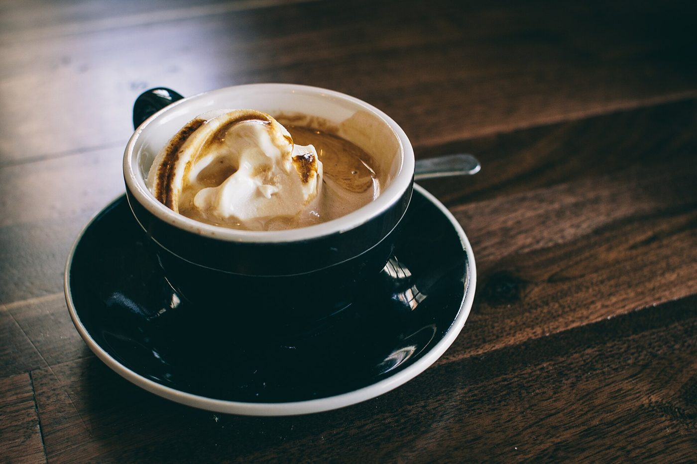
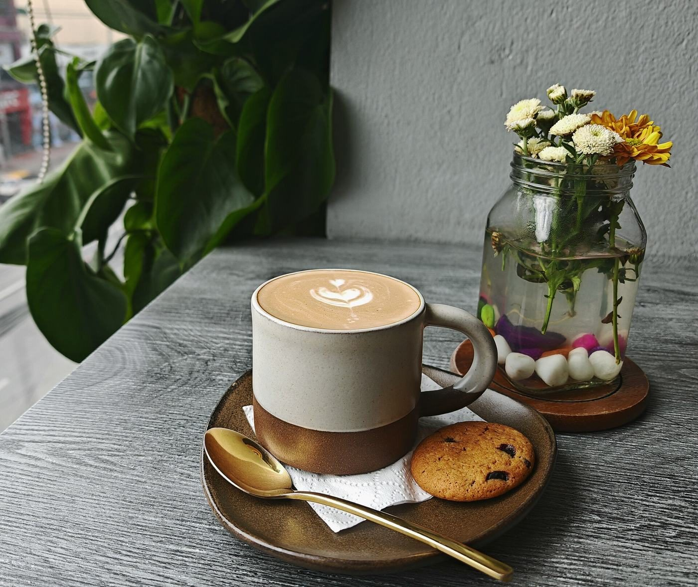
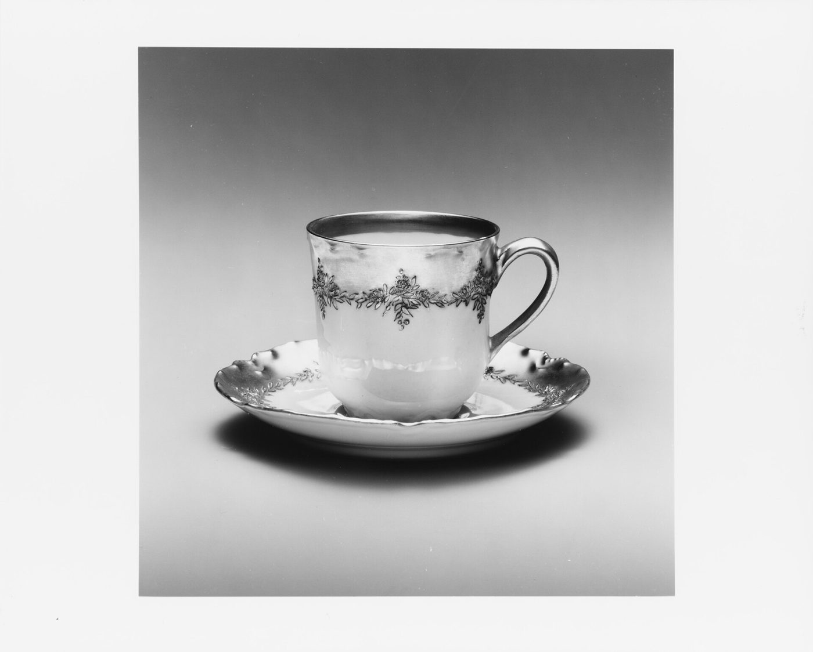

制作側の連想
水飲み鳥の部位を、配置図にしてみる
このサイトは、机の上でゆっくり前後に揺れる水飲み鳥の玩具を図にしたつもりで作りました。六つの部位に番号をふり、上の図と並べています。玩具の仕組みを描いたもので、生き物を題材にしたものではありません。制作側の連想で、お店の理念・由来とは無関係です。実際の製品の仕様を示すものでもありません。
凡例
六つの部位
- 1頭のフェルト頭をおおう、水を吸うための布の部分。
- 2くちばし頭から前へ伸びる、水に触れる先端。
- 3首のガラス管頭と下の球をつなぐ、細長いガラスの管。
- 4軸と脚体の中ほどを支え、前後に揺れる支点になる部分。
- 5下のガラス球色つきの液体を入れた、胴体にあたる丸い球。
- 6水のコップくちばしの先に置く、水を入れた小さなコップ。
ギャラリー(イメージ)
コーヒーと焼き菓子の写真






写真はコーヒーやパン、焼き菓子のイメージです。お店のものではなく、お店で提供している商品を示すものでもありません。
ご案内
お店のこと(確認できたものだけ)
| 所在地 | 〒370-0517 群馬県邑楽郡大泉町西小泉3丁目9-1 |
|---|---|
| 電話 | 準備中 |
| 営業時間 | 準備中 |
| 定休日 | 準備中 |
| ご予約 | 準備中 |
| 駐車場 | 準備中 |
| SNS | Instagram @cafe_hibikiya |